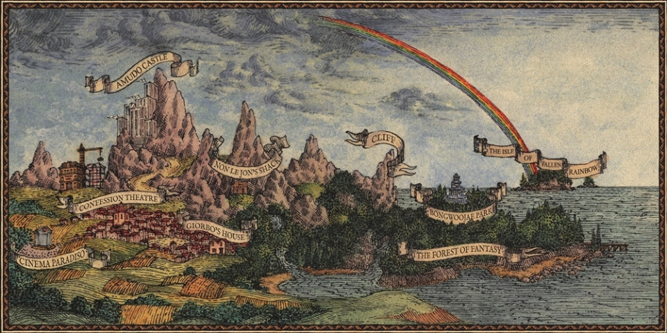

- 환상의 나라
- 용맹한 발걸음이여
- 비틀 파워!
- 고백극장
- 로맨스의 왕
- 페어웰 투 암스! + 요람 송가
- 소년 클레이 피전
- 누구를 위한 노래였던가
- 밤의 공원
- [title] 외딴섬 로맨틱
- 블루버드, 스프레드 유어 윙스!
- 굿바이 환상의 나라
- 컴백홈
비가 왔었나 봐
이젠 느낄 수 있어요
신비로워
처음 마주한 사랑은
푸르른 그 빛을 휘둘러
여름으로!
그 풀빛 아래 사랑은
완벽하리
아름다운 밤이에요
밤의 공원으로 오세요
그 어린 광기를 달래러요
차가운 달빛이 사랑하긴 좋아요
오 그때 내 마음은
아침이 오면은
초라할 작은 불빛
또 내일은 해가 뜬대요
서둘러 떠나요 이 밤에 취해
(Dream until tomorrow)
서둘러 도망친 이곳은
밤의 공원
그대와 나의 비밀을
눈감아줄
너그러운 밤이 사는 곳
가끔 저 달이 무서워요
곧 나가떨어질 것 같아 어떡해
겉도는 이 사랑도 영원할 순 없다고
오 그때 내 마음은
아침이 오면은
초라할 작은 불빛
또 내일은 해가 뜬대요
서둘러 떠나요 이 밤에 취해
난 사랑을 알아요
어둠 속에 피는
격정을 아는 불빛
또 내일은 해가 뜬대도
영원할 거예요 아름다워요
(Dream until tomorrow)
초록을 거머쥔 우리는
여름으로!
푸르던 그 빛을 휘둘러
여름으로!
함부로 겨눠보던 미래와
웃음 짓던 그대와 나
보기 좋게 빗나간 우리들의 아침도
영원에 걸었던 약속은
껴안는 법도 모르는 채
뒤척이다 마주할 창백한 아침이여
